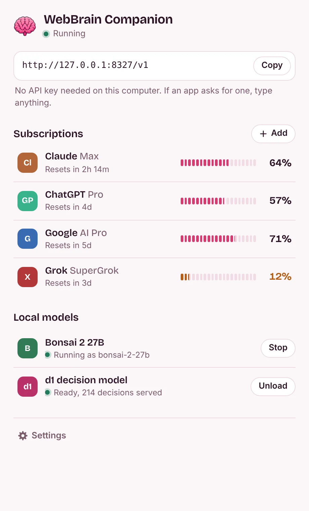

让已订阅的 AI 服务为 WebBrain 所用
WebBrain Companion 位于您的菜单栏或系统托盘中。登录 Claude、ChatGPT、Google、Grok 或 Kimi 一次，WebBrain 可通过计算机上的一个地址访问所有这些内容。托盘显示每个计划还剩多少以及何时重置。
其他一切都发生在一个小面板中
单击该图标将其打开。一页包含 WebBrain 的地址、剩余的每个计划以及两个本地型号；单击一行查看其详细信息，或单击齿轮查看设置。它会跟随您的浅色或深色环境，并讲英语和土耳其语。

一页
WebBrain 需要的地址、最接近耗尽限制的每个计划以及带有主按钮的本地模型。此计算机上没有 API 密钥。

添加订阅
在提供商自己的页面上登录。登录信息保留在您的计算机上。

本地型号
单击 Bonsai 2 27B 查看其运行位置以及图像是否适合，并更改其选项。 d1以同样的方式打开。


Bonsai 2 27B，尺寸适合您的机器
PrismML 的 Ternary Bonsai 2 27B 将 270 亿个参数打包到 5.95 GB 中。配套产品与其 Q8_0 视觉投影仪和 PrismML 的 llama.cpp 版本一起安装，或者作为 Apple Silicon 上的 MLX 包安装，并在您的订阅旁边将其列为 bonsai-2-27b。
在下载任何内容之前，它会计算出模型运行的位置以及图像输入是否合适。当模型及其上下文之后还剩下大约 1 GB 的 GPU 内存时，视觉投影仪将在 GPU 上运行；当只有系统 RAM 有空间时，视觉投影仪将在 CPU 上运行，否则将保持关闭状态。您可以覆盖面板中的选择。
| 机器 | 运行于 | 图像输入 | 背景 |
|---|---|---|---|
| MacBook Air，8GB | 苹果 GPU 与 Metal。它需要比 Mac 更多的内存，因此需要交换。 | 关闭 | 8K 代币 |
| MacBook Pro，16 GB | 苹果 GPU 与 Metal | 上，GPU | 16K 代币 |
| 配备 RTX 4060 (8 GB) 和 16 GB RAM 的笔记本电脑 | CUDA，GPU 上 64 层中的 57 层 | 上，CPU | 8K 代币 |
| 配备 RTX 4090 (24 GB) 和 64 GB RAM 的台式机 | CUDA，全部在GPU上 | 上，GPU | 64K 代币 |
| 配备 Radeon RX 7600 (8 GB) 和 32 GB RAM 的台式机 | Vulkan，GPU 上 64 层中的 61 层 | 上，CPU | 8K 代币 |
| 不带显卡的 PC，16 GB RAM | CPU | 上，CPU | 8K 代币 |
| 不带显卡的 PC，8 GB RAM | CPU，剩余空间很小 | 关闭 | 8K 代币 |
由同伴的计划者根据全部和空闲记忆制定出；安装时计算机上的数字决定。在 Apple Silicon 上，MLX 包带有自己的视觉塔，因此图像始终处于开启状态。
WebBrain的决策模型，在浏览器之外
WebBrain 的 d1 模型回答有关页面的是/否、选择和评分问题以及最多四个屏幕截图，例如任务是否完成。配套产品在 ONNX Runtime 上运行并通过 HTTP 进行应答，因此浏览器选项卡不必加载 1.9 GB。它的 Go 端口返回与 WebBrain 的 JavaScript 适配器相同的标记和概率。本机 d1 可在 Windows、Linux 和 Apple Silicon Mac 上使用；它在 Intel Mac 上不可用。
询问
curl http://127.0.0.1:8327/companion/v1/decide \
-H "Content-Type: application/json" \
-d '{"state": "Order #1042 is confirmed.",
"questions": {"completion": {
"type": "choice",
"instructions": "Did the task finish?",
"criteria": {"completed": "Confirmed",
"not_completed": "Failed or unfinished",
"unknown": "Not established"}}}}'应答（CPU 运行时为 273 毫秒）
{"answers": {"completion": {
"choice": "completed",
"confidence": 0.99997,
"probabilities": {"completed": 0.99997,
"not_completed": 0.000002,
"unknown": 0.000033}}},
"diagnostics": {"runtime": "onnxruntime 1.31.0 (CPU)", …}}连接WebBrain
你这样做一次。此计算机上的应用程序不需要 API 密钥。
- 安装伴侣并打开它。在其面板中添加订阅并在浏览器中完成登录。
- 默认地址为
http://127.0.0.1:8327/v1。如果端口发生更改，请复制面板或托盘菜单中显示的地址。 - 在WebBrain中，打开Providers页面（侧面板模型菜单中的更多…）并选择WebBrain Companion。保留其默认地址，除非应用程序显示另一个端口。此计算机上不需要 API 密钥。
- 单击加载模型，选择模型，保存，并在激活卡之前运行测试连接。仅为接受图像的模型打开视觉。
此计算机上的任何 OpenAI、Anthropic 或 Gemini 客户端都可以使用相同的地址。要从其他设备使用它，请在面板设置中打开网络访问；然后该设备需要面板显示的 API 密钥。
下载
版本0.1.2。每个包包含一个程序；您的设置和登录信息位于您的用户文件夹中。
macOS
macOS 12 或更高版本、Apple Silicon 和 Intel（d1 需要 Apple Silicon）
你的系统将 WebBrain Companion 移至应用程序。该版本未经 Apple 公证：第一次，请在系统设置、隐私和安全（无论如何打开）中允许它。在 macOS 14 及更早版本上，按住 Control 键单击它并选择“打开”。
Windows
Windows 10 和 11、x64 和 Arm64
你的系统运行安装程序：它会为您的帐户安装，无需管理员提示，并将 WebBrain Companion 添加到“开始”菜单。在安装程序经过代码签名之前，SmartScreen 可能会显示“Windows 保护了您的电脑”：选择更多信息，然后仍然运行。
Linux
x64 和 Arm64
你的系统解压并运行 webbrain-companion。该图标需要 StatusNotifierItem 托盘：KDE、XFCE 或带有 AppIndicator 扩展名的 GNOME。
登录之前
您计算机上保留的内容
- 在此计算机上不需要 API 密钥：伴侣仅响应来自 127.0.0.1 的请求并关闭网页，因此您访问的网站无法花费您的计划。 WebBrain 等浏览器扩展和此计算机上的应用程序可以使用它。
- 仅当您在面板设置中打开网络访问时，其他设备才能连接。然后它会监听 0.0.0.0，并且他们需要面板显示的 API 密钥。
- 登录信息存储在您的用户文件夹中，并且仅发送给它们所属的提供商。
- 没有分析。除了您登录的提供商之外，它仅获取 CLIProxyAPI 的公共模型列表，并且当您安装模型时，它的文件来自 Hugging Face、GitHub 以及 MLX、PyPI。
- 发送到订阅的提示仍会发送到该提供商。只有 Bonsai 2 27B 和 d1 在您的计算机上运行。
您的提供商决定什么
- 通过代理进行的订阅与提供商允许的订阅不同。 Anthropic 的消费者条款限制 API 密钥之外的自动访问，而 Google 的 Gemini CLI 条款表示其登录不得与第三方工具一起使用。
- 添加之前请检查您的计划和区域的条款。如果帐户对您很重要，那么提供商 API 密钥是更安全的途径。
- 关闭公共 Wi-Fi 上的网络访问，并且切勿将端口 8327 转发到互联网。 API 密钥不是互联网级安全性。